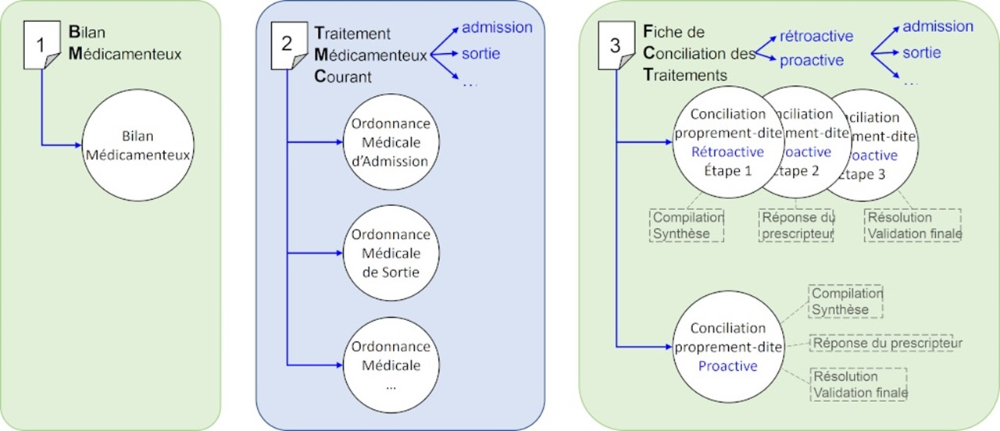

Guide d'implémentation du médicament
0.1.0 - ci-build
Guide d'implémentation du médicament
0.1.0 - ci-build
Guide d'implémentation du médicament - Local Development build (v0.1.0) built by the FHIR (HL7® FHIR® Standard) Build Tools. See the Directory of published versions
Le contexte est défini selon 2 axes:
Ainsi, par exemple, la combinaison de la situation rétroactive et de l’événement admission définit la conciliation rétroactive d’admission.

Le profilage de ces ressources répond aux recommandations du guide méthodologique de mise en œuvre de la conciliation médicamenteuse publié par la Haute Autorité de Santé.
La FCT fait référence au bilan médicamenteux (le traitement médicamenteux du patient avant hospitalisation) et au traitement médicamenteux courant (le traitement médicamenteux en cours lors de l’hospitalisation). De ce fait, le profil FrCurrentMedicationComposition a été défini pour rendre compte de ce traitement médicamenteux courant.

Le profil FrOnAdmissionRetroactiveMedicationReconciliationComposition contraint le profil général FrMedicationReconciliationComposition pour répondre au cas particulier de la conciliation rétroactive d’admission. Il référence un cas particulier de traitement médicamenteux courant, l’ordonnance médicale d’admission (OMA), ordonnance adressée par le profil FrOnAdmissionMedicationComposition qui contraint le profil général FrCurrentMedicationComposition.